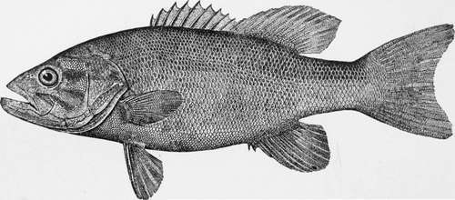

Minnow-Casting
Description
This section is from the book "American Game Fishes", by W. A. Perry. Also available from Amazon: American Game Fishes: Their Habits, Habitat, and Peculiarities; How, When, and Where to Angle for Them.
Minnow-Casting
Casting the minnow on streams or lakes is a mode of angling that is second only to fly-fishing when suitable tools and tackle are employed. For this style of fishing I devised, some twenty years ago, the rod known as the "Henshall rod," which having been extensively manufactured for fifteen years, is now so well known that it is only necessary to allude to it by name. Previous to this, long and heavy rods and coarse tackle were employed, as mentioned under the caption of "Old-Time Bass-Fishing." Casting the minnow is now, I might say, the most popular method of bass-fishing among expert anglers, for it is, unfortunately, only the minority of the angling fraternity that practice the more artistic and preferable mode of fly-fishing for the Black Bass.
Rods
The rod for minnow-casting should be short, light and flexible. Many anglers use a short, natural cane rod of small caliber, but it is too stiff and inelastic for playing a fish properly, though it answers very well for casting, which, however, is not the most important function to be considered in a rod-a long cast could be made with a billiard-cue.
I think the Henshall rod fulfills every condition and meets all the requirements for minnow-casting. For stream-fishing, either from the bank or by wading, a lighter rod may be used than for lake-fishing, though the standard rod of eight ounces and eight and a quarter feet will answer well in either place.
For the peculiar style of Bass-fishing on the reefs about the Bass Islands of Lake Erie, where a sinker of from two to eight ounces is used (as mentioned on a preceding page), I have devised a rod which is styled the "Little Giant" rod, and its specifications are as follows: The rod is made in but two pieces (of equal length) with one joint, the latter being non-doweled with cylindrical ferrules. It can be constructed of split bamboo throughout, or with ash butt and lancewood or greenheart top. The entire length of the rod is seven and one-half feet, and the weight about eight ounces, depending somewhat on the material of construction:
Length of reel-seal....... |
Mr. Thos. H. Chubb, of Post Mills, Vermont, made me several rods, of different kinds of wood, and split bamboo, in accordance with the above specifications (which are for an ash and lancewood rod), and they all fulfilled the conditions sought for, exactly. Mr. Chubb put this rod on the market during the past season, and I hope to see it displace the rude and uncouth and insufficient rods heretofore employed by most of the Lake Erie anglers. It is stiff and powerful enough to manipulate the heavy sinker, and springy and pliable enough to kill the fish, without being of any greater weight than the standard Henshall rod. It will also be found effective for light Striped Bass fishing on the east coast, or wherever a heavy sinker or bait is required to be cast from a free-running, multiplying reel.
Reels
Only the multiplying reel should be used in minnow-casting, and it should be the best that can be purchased for satisfactory work. There are now at least half a dozen different styles of reels made for this special fishing, which are marvels of skill, workmanship, and ingenuity. The price rans from ten to twenty dollars, and the angler cannot go far wrong whichever he may choose, but he should always remember that the best is the cheapest.
Lines
The braided raw silk line is best, and the braided linen line next. Twisted lines cannot be used for casting the minnow owing to their kinking. For stream and ordinary lake-fishing, the "H" line, or, as it is styled by some manufacturers, the "Henshall" line, is the best size to use. It is smaller and more closely braided than the old "G" line, although as strong. Very long casts can be made with it, and its introduction, a few years ago, was indeed a boon for bait-fishers.
For Lake Erie fishing, where very heavy sinkers are used, the "G," or, still better, the"F" line is more suitable. Fly-lines of enameled or water-proofed silk should never be used in bait-fishing where long casts are made, owing to their stiffness and large caliber.
Hooks
The Sproat hook stands at the head of its class, with the O'shaughnessy a good second. Most anglers employ hooks too large for Black-Bass fishing, from 2-0 to 5-0-but smaller hooks, sizes 1 and 2, are much to be preferred; they are amply strong enough, and the smaller size of the wire is not so apt to kill or injure the minnow. The fact of the small hooks of the artificial flics so frequently taking and holding the Bass, should convince even the Lake Erie anglers that they are large enough for bait-hooks as well.
Many anglers, either through prejudice, ignorance or habit, still use the cheap Kirby bend (that is, side or crooked bend) hooks, notwithstanding their inefficiency and poor quality.
Large Mouthed Black Bass.
The best hooks are always black or japanned-those of an inferior quality are always blued or bright.
The hook should be tied on a gut-snell for stream or lake fishing, but a gimp-snell may be used wherever Pike or Pickerel abound, as a matter of economy only.
Casting
The angler, then, being rigged with rod, reel and line, affixes a small brass swivel to the end of the line, and to the other end of the swivel loops on a snelled Sproat hook, which he passes through the lips of a lively "shiner," and is ready for business or pleasure.
To make a cast he reels up the line until the minnow hangs but a foot or two below the tip of the rod; then, with his thumb on the spool of the reel, he makes a quartering cast, toward his right or left front, keeping a gentle pressure of his thumb on the rapidly revolving spool (to prevent overrunning), and as the minnow reaches the water, twenty or even forty yards away, he stops the reel by a stronger pressure of the thumb.
Then, after permitting the minnow to swim about at its own sweet will for a few seconds, he reels it slowly toward him, and prepares for another cast in the same, or another, direction. The casts are to be made toward the same grounds or locations as mentioned in fly-fishing, though the minnow can be cast farther than the fly, and the chances for fish are, consequently, greater. The artificial minnow, or a small spoon, may be cast in the same manner in swift, broken water, especially about riffles and below mill-dams, with good results.
Playing
When the Bass takes the minnow, the angler should keep his thumb on the reel and allow the fish to run a few seconds with the bait, and then stop the reel by a firmer pressure of the thumb, when, if the fish gives a few short tugs or jerks, he should be permitted to take a little more line, and the reel again stopped; then, if the Bass pulls steadily and strongly, without jerking, he should be hooked by a turn of the wrist (as mentioned under fly-fishing). Very often the fish pulls steadily from the time of seizing the minnow, and goes off with a rush, when he is to be hooked at once; and, again, he often hooks himself in his wicked grab at the minnow.
The manner of playing the Bass in bait-fishing is to all intents and purposes the same as in fly-fishing.
Continue to:
- prev: Fly-Fishing
- Table of Contents
- next: Still-Fishing